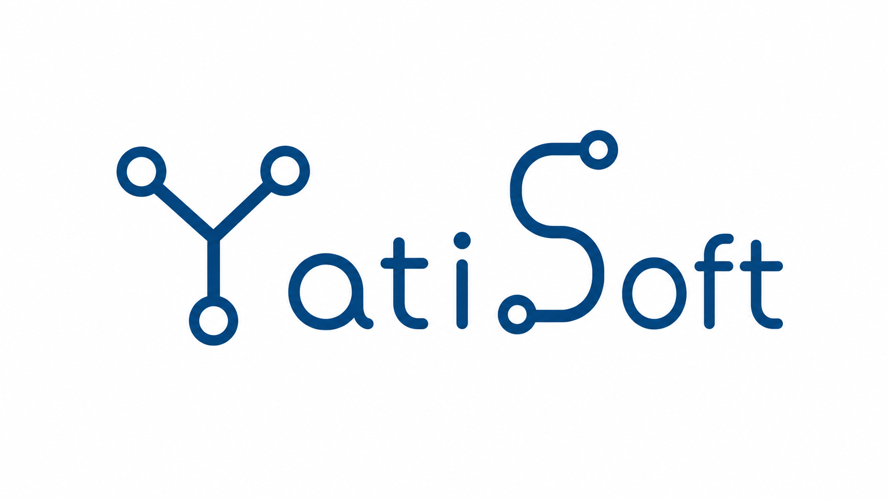

Ingeniero de Sistemas Computacionales Gestión de Proyectos & Procesos Tecnológicos
Oriento mi perfil a la gestión de proyectos y procesos tecnológicos, integrando análisis,
software y datos para transformar necesidades del negocio en soluciones medibles y sostenibles.
Soy egresado de Ingeniería de Sistemas Computacionales, orientado a la gestión de proyectos y procesos
tecnológicos. Me interesa analizar cómo funcionan los procesos, identificar oportunidades de mejora y
convertir necesidades del negocio en requerimientos y soluciones tecnológicas.
Cuento con una base técnica en desarrollo de software, bases de datos y tecnologías de datos, lo que me
permite comprender tanto la perspectiva funcional como técnica de un proyecto. Fortalezco además
conocimientos en BPM, BPMN, metodologías ágiles, análisis de requerimientos y mejora continua.
Nombre
Antony Hurtado
Email
antojs.hurtado@gmail.com
Ubicación
Perú 🇵🇪
Áreas y herramientas
BPM / BPMNGestión de ProyectosSoftwareSQL & DatosMetodologías Ágiles
Combino análisis de procesos, gestión tecnológica y conocimientos técnicos para participar en proyectos
desde la identificación del problema hasta la implementación y mejora de la solución.
Gestión de Proyectos Tecnológicos
Apoyo en la planificación, organización y seguimiento de proyectos tecnológicos, conectando
requerimientos, actividades, equipos y objetivos de negocio.
BPM y Mejora de Procesos
Análisis y modelamiento de procesos para identificar oportunidades de mejora, estructurar flujos de
trabajo y apoyar iniciativas de transformación tecnológica.
Datos e Indicadores
Uso de datos, SQL e indicadores para analizar resultados, generar información útil y apoyar la toma
de decisiones y la medición de procesos.
Soluciones Tecnológicas
Comprensión técnica de software, bases de datos e integraciones para traducir necesidades funcionales
en soluciones viables junto a equipos tecnológicos.
Mi enfoque
Cómo abordo proyectos tecnológicos
Parto del entendimiento del proceso y sus necesidades para definir requerimientos, implementar soluciones
y posteriormente medir sus resultados para impulsar la mejora continua.
01
Proceso y necesidad
Analizo el proceso actual, sus participantes, problemas y objetivos para comprender la necesidad antes
de plantear una solución tecnológica.
02
Modelamiento y solución
Estructuro procesos y requerimientos utilizando enfoques como BPMN y analizo cómo software, datos o
automatización pueden responder a las necesidades identificadas.
03
Implementación y mejora
Apoyo la implementación, pruebas y seguimiento de la solución, utilizando indicadores y
retroalimentación para evaluar resultados y promover la mejora continua.
Colaboraciones
Tecnología aplicada en empresas reales
Empresas a las que acompaño con soluciones digitales pensadas para sus objetivos y usuarios.

Colaboración activa
YatiSoft
Educación y productos
Servicio brindado
Desarrollo web
Diseño e implementación de su presencia web corporativa, organizando la información de sus
servicios y priorizando una experiencia de navegación clara para sus clientes.
Proyectos donde he aplicado conocimientos de software, datos, análisis y organización de soluciones,
fortaleciendo una visión integral del ciclo de vida de proyectos tecnológicos.
Plataforma orientada a conectar estudiantes, empresas y proveedores mediante inteligencia artificial.
Participación en el análisis de la solución, estructuración funcional e implementación de un MVP integrado
con frontend, backend y base de datos.
Estoy abierto a participar en proyectos de gestión tecnológica, mejora de procesos, análisis de
requerimientos y soluciones donde pueda integrar mi visión de negocio con conocimientos de software y datos.